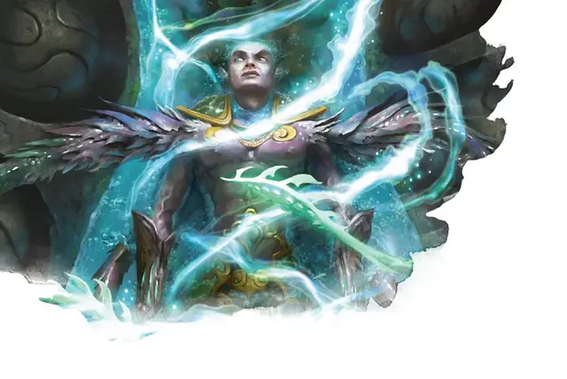

Гибрид-шокер
Hybrid Shocker
Средний Гуманоид (Гибрид Симиков), нейтрально-добрый

Класс Доспеха 12
Хиты 39 (6к8 + 12)
Скорость 30 футов
| мод | спас | ||
|---|---|---|---|
| СИЛ | 13 | +1 | +1 |
| ЛОВ | 14 | +2 | +2 |
| ТЕЛ | 14 | +2 | +2 |
| мод | спас | ||
|---|---|---|---|
| ИНТ | 10 | +0 | +0 |
| МДР | 12 | +1 | +1 |
| ХАР | 9 | −1 | −1 |
Иммунитет к урону электричество
Чувства пассивное Восприятие 11
Языки Общий, плюс один язык
Опасность 1 (200 опыта)
Бонус мастерства +2
Особенности
Наэлектризованное тело. Любое существо, которое касается гибрида или попадает по нему рукопашной атакой, находясь в пределах 5 футов от него, получает 5 (1к10) урона электричеством.
Свечение. Гибрид излучает яркий свет в радиусе 10 футов и тусклый свет еще на 10 футов.
Действия
Мультиатака. Гибрид совершает две атаки: одну Шокирующим прикосновением и одну Щупальцами.
Шокирующее прикосновение. . Рукопашная атака оружием: +4 к попаданию, досягаемость 5 фт., одна цель. Попадание: 9 (2к8) урона электричеством.
Щупальца. . Рукопашная атака оружием: +4 к попаданию, досягаемость 15 фт., одно существо. Попадание: цель схвачена (Сл высвобождения 11), и гибрид притягивает цель к себе на расстояние до 15 футов. Пока этот захват не закончится, цель получает 5 (1к10) урона электричеством в начале каждого своего хода, и гибрид не может использовать свои Щупальца на другом существе.
Описание
Проект «Страж» является следствием растущей напряженности в Синдикате Симиков по мере того, как надвигается угроза конфликта между гильдиями. Полагая, что симики должны быть готовы сражаться за свою жизнь, когда этот конфликт достигнет апогея, биоманты создали солдат, чтобы помочь защитить гильдию. Эти гибриды (также называемые стражами, по названию проекта) создаются из людей, ведалкенов и членов гильдии эльфов, которые добровольно трансформируются.